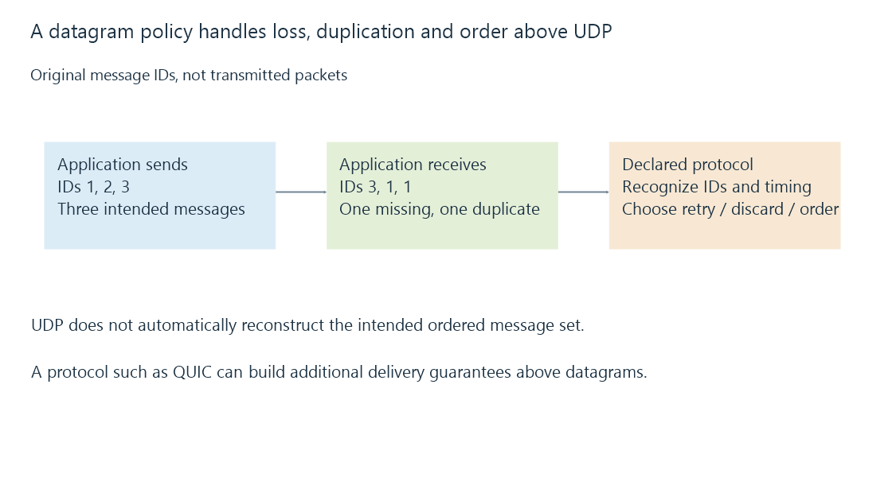

UDP datagrams and application delivery policy
UDP carries bounded datagrams without supplying TCP-style ordering or retransmission, allowing each application protocol to define its own response to loss and timing.
UDP gives an application datagrams: bounded messages addressed to a destination IP and UDP port. It does not turn those messages into one automatically recovered ordered byte stream.
The protocol above UDP decides what a missing, repeated or late datagram means.
Message boundaries survive delivery, when delivery succeeds
Use this original application-message exercise:
{
"sentIds": [1, 2, 3],
"receivedIds": [3, 1, 1]
}
Message two is missing. Message one appears twice, and three arrived first.
The application can use its declared IDs to recognize those conditions. UDP itself does not resend message two or reconstruct the sent order.

The useful policy depends on the content. A discovery query might be repeated; an old timing update might be discarded in favor of a newer one; a reliable transfer protocol can request missing data.
A datagram still has a size budget
UDP’s ordinary header occupies eight bytes. In a declared 1500-byte IPv4 packet with a minimum twenty-byte IP header, 1472 bytes remain for the application payload.
With the forty-byte IPv6 base header and no extensions, the corresponding value is 1452 bytes.
Those are header arithmetic examples, not a promise that every internet route accepts a 1500-byte packet. Tunnels and path limits can reduce the usable size.
Dividing a large application message into several datagrams also requires a policy for identifying and assembling the pieces. Losing one piece may invalidate the complete message.
A retry needs a request meaning
Repeating a discovery request can elicit another description of the same service. Repeating an operation that changes state can require duplicate detection or another idempotent design.
A timeout therefore belongs to the application’s request lifetime. It can decide when to retry or report failure, but cannot prove why no response arrived.
The request can be filtered, the response can be filtered, the service can be absent, or the route can simply have lost a datagram.
“Uses UDP” does not mean “unreliable application”
QUIC uses UDP as its underlying transport while defining its own reliable streams, loss recovery and security.
A protocol’s end-to-end behavior must therefore be read at the appropriate layer. UDP describes the datagram service, not all guarantees built above it.
Emby’s local server discovery, mDNS and SSDP use different messages and destinations despite sharing UDP. A rule or observation for one discovery protocol is not automatically evidence about the others.
See Also
- TCP: an ordered byte stream for media delivery
- Multicast DNS and local-link naming
- SSDP discovery, advertisements and service locations
- Emby server discovery and advertised endpoints